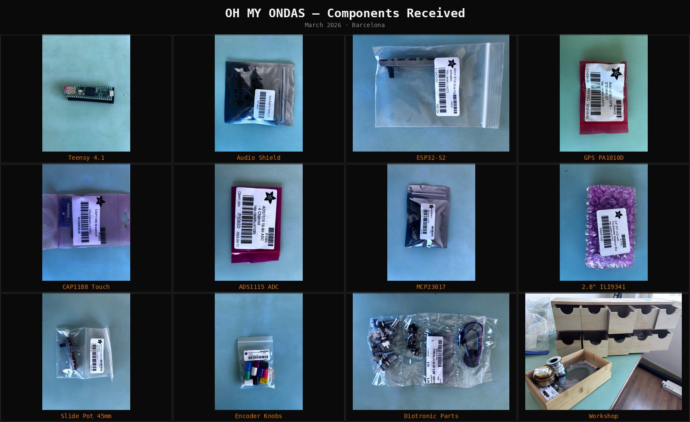
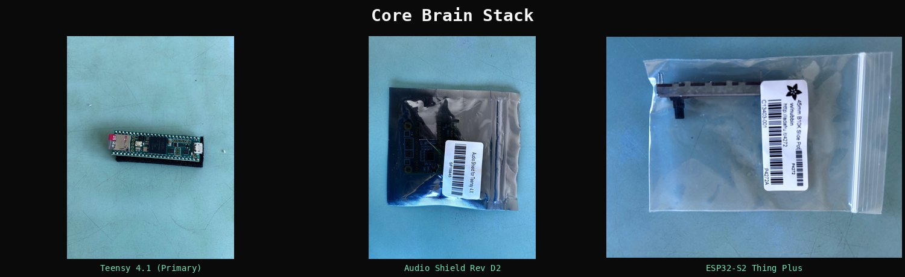
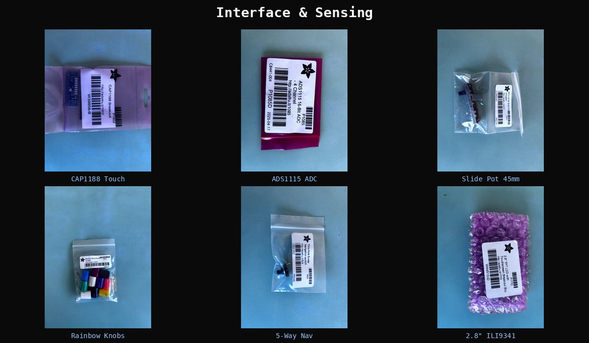
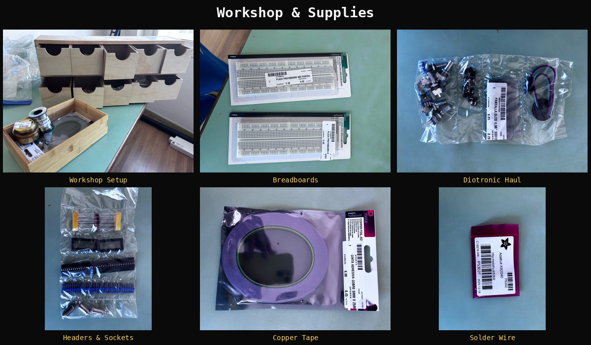

Build Log
Prototype #1 · Barcelona · newest first
Parts ordered for the radio, mic and encoders; piezo becomes a contact mic
One DigiKey order (shipped to Barcelona, duties included) covers what prototype #1 still missed: two Si4732-A10 radio chips (FM, AM and shortwave), two Adafruit quad rotary encoder boards, a MAX9814 mic preamp, a Perma-Proto board for the final solder-down, two 8 MB PSRAM chips and a logic analyzer. The radio is built from the bare chip on a SOIC-to-DIP adapter; the crystal, adapter and small capacitors come from Diotronic.
The piezo disc will work as a contact mic: piezo → MCP6002 op-amp buffer → a MIC/PIEZO switch → the Audio Shield line input. Touch it to a table, a railing or a double bass and it records the vibration instead of the air.
The full v1 breadboard layout is now on the Prototype page, the cost of the parts actually used on the BOM page, and the Field Unit v1 concept in the Gallery. The Teensy is loaded with the layer 4 fader test, waiting for the ADS1115 and faders to be wired.
The LCD lights up — touch, OLED and LCD running together layer 3 pass
The 2.8″ ILI9341 LCD had stayed white for two sessions. The controller answered and even held the image in memory, but the panel showed nothing. The cause was the wiring: the board was plugged into the breadboard and powered through its 8-bit parallel header, with two signals swapped and reset left floating. Taken out of the breadboard and wired only on its SPI row, it worked at once. Also learned: 40 MHz SPI over jumper wires gives a white screen too; the library default is fine.
Working wiring (SPI1): CLK 27, MOSI 26, MISO 39 (needs SPI1.setMISO(39)), CS 38, D/C 37, RST 36, power from 3.3 V.
The rest was rebuilt one step at a time, checking the LCD after each step: LCD alone, then power through the breadboard rails, then the touch controller, then the OLED. All four steps passed.
Touch pads provisional
With pads shown live on the LCD and each pad playing its own sample: pads 1, 3, 4, 6, 7 and 8 gave clean single touches with sound. Pad 2 never registered and pad 5 is not wired yet. About one touch in three fired several pads when the jumper ends were close together. Accepted for now; isolation gets re-checked on the real panel pads.
Decisions
USB only for v1: the Teensy’s own USB carries MIDI, audio and power, so the ESP32 is out of v1 and internet radio is replaced by an over-the-air radio. GPS stays (location and time on every capture). The NeoPixel strip is dropped for now. Power comes from a USB-C power bank.
Touch and OLED on a second I2C bus OLED pass
With the Audio Shield under the Teensy, pins 0–23 disappear inside its sockets. Every user-interface part therefore moves to the Teensy’s second I2C bus (Wire2, pins 24/25), leaving the first bus to the audio codec alone.
Two lessons from the CAP1188 touch controller: the audio codec only answers on I2C once its clock is running, and the touch chip’s start-up fails if the previous I2C transaction was refused, so the test now does one plain register read first. Copper pads on black anti-static foam read as permanently touched (the foam conducts); on cardboard they work.
The 0.96″ OLED works on the same bus. It is a two-colour panel: the top 16 rows are yellow, the rest blue, so the screens are designed around a 16-pixel status band.
Layer 1: first sound from the stack digital path pass
Teensy 4.1 and Audio Shield stacked. The SGTL5000 codec answers and plays a 440 Hz tone in the headphones, and a WAV file plays from the SD card. Recording to the SD card and playing it back works on the digital path (every byte back, the test tone measured at 880.0 Hz). Recording from a real microphone is not tested yet; that comes with the mic preamp.
A small helper now copies test files to the SD card over USB, so no card reader is needed.
All components received — build begins
After months of sourcing components across three countries and four suppliers, every part for the Oh My Ondas prototype is now on the workbench in Barcelona. The wooden drawer organizer is loaded, the soldering station is warm, and the breadboards are fresh out of the packaging.

All components across three orders — Teensy, Audio Shield, ESP32, GPS, touch, displays, encoders, faders, and prototyping supplies
What Arrived
The components came from three separate orders, timed around travel between Barcelona and Brussels, with a US stopover in Denver:
Antratek Belgium delivered the core brain: a Teensy 4.1 with pre-soldered pins, the Audio Shield Rev D2 (SGTL5000 codec with headphone amp), and a SparkFun ESP32-S2 Thing Plus for WiFi connectivity. These arrived in Brussels in January and traveled to Barcelona by hand.
Diotronic Barcelona provided the interface components and all the prototyping supplies — rotary encoders, tactile buttons, a 0.96″ OLED display, copper tape for capacitive touch pads, NeoPixel strip, 3.5mm audio jacks, pin headers, DIP sockets, passives, breadboards, jumper wires, and soldering supplies. A single walk-in visit to their shop on Carrer de Muntaner.
Adafruit (shipped to the US, carried back) filled the gaps Diotronic couldn’t: GPS module (PA1010D with built-in antenna), CAP1188 capacitive touch breakout, ADS1115 16-bit ADC for reading slide faders, MCP23017 I/O expanders for the encoder matrix, a 5-way navigation switch, slide potentiometers, rainbow encoder knobs, and a 2.8″ ILI9341 TFT LCD with touchscreen. Plus a backup Teensy and Audio Shield.

Core Brain Stack — Teensy 4.1 (Primary), Audio Shield Rev D2, ESP32-S2 Thing Plus
The Core Stack
The heart of Oh My Ondas is a Teensy 4.1 running at 600MHz with the PJRC Audio Library — a real-time DSP toolkit that handles sample playback, effects, mixing, and recording simultaneously. The Audio Shield sits directly on top, providing the SGTL5000 codec for CD-quality 16-bit/44.1kHz audio in and out through a 3.5mm headphone jack.
The SanDisk Ultra 32GB SD card is already seated in the Teensy’s built-in SDIO slot — faster and more reliable than the SPI-based slot on the Audio Shield, and it frees up the SPI bus for the display.
The ESP32-S2 Thing Plus handles all WiFi communication. It runs independently with its own firmware, talking to the Teensy over UART. The plan then was to use it for an AI composition service later; in October the ESP32 was dropped from v1 (see 18 October).

Interface & Sensing — CAP1188 Touch, ADS1115 ADC, Slide Pots, Rainbow Knobs, 5-Way Nav, 2.8″ ILI9341
Sensing the World
The interface layer is where Oh My Ondas becomes a proper instrument:
The CAP1188 provides 8 capacitive touch channels — each connected to a copper tape pad that becomes a sample trigger. Touch a pad, hear a sound. The copper tape from Diotronic is 5mm wide and 25 meters long — enough for dozens of pad iterations.
The ADS1115 is a 16-bit ADC that reads the five 45mm slide potentiometers. Four pots connect directly to its four channels; the fifth reads through the Teensy’s built-in ADC. Each fader controls a different parameter — mix level, effect depth, modulation, tempo, and crossfade.
The PA1010D GPS has a built-in patch antenna and supports GPS + GLONASS. Every recording gets stamped with exact coordinates and time — the core of the place-time binding philosophy. First fix takes about 30 seconds outdoors, which is fine for pedestrian exploration.
Two MCP23017 I/O expanders add 32 GPIO pins over I2C, enough to read 7 rotary encoders (with push switches) and the 5-way navigation switch. The encoders use the colorful Adafruit Rainbow Micro Knobs — each a different color for quick visual identification of function.
The 2.8″ ILI9341 TFT with resistive touch replaces the originally planned 3.5″ display. Smaller, but the ILI9341_t3 library is the gold standard for Teensy — DMA-accelerated, extremely fast screen updates with zero CPU overhead. It’ll show waveforms, GPS status, pattern grids, and menu navigation.

Workshop & Supplies — wooden organizer, breadboards, Diotronic haul, headers & sockets, copper tape, solder wire
The Workshop
The build station is set up on the desk in Barcelona. A wooden multi-drawer organizer keeps components sorted by type. The Diotronic soldering station (48W, temperature controlled) is ready alongside solder wire, flux paste, and two 830-point breadboards for prototyping.
The build follows an iterative validate-then-expand approach — eight phases, each ending with a working test before adding the next layer:
- Core Audio — Teensy + Audio Shield + SD card + headphones. Goal: hear a WAV file.
- Touch Sensing — CAP1188 + copper pads. Goal: touch triggers samples.
- Display — OLED + LCD + NeoPixels. Goal: see status while hearing audio.
- Analog Inputs — ADS1115 + slide pots. Goal: faders control parameters.
- I/O Expansion — MCP23017 + encoders + buttons + nav switch. Goal: full interface.
- GPS — PA1010D. Goal: coordinates on display.
- WiFi — ESP32 UART link. Goal: Teensy and ESP32 communicate.
- Integration — everything running simultaneously. Goal: no conflicts.
What’s Next
Phase 1 starts now. The Audio Shield needs female headers soldered to its underside so it can stack onto the Teensy’s pre-soldered male pins. Then it’s SD card, headphones, flash the WavFilePlayer example, and listen.
The design reviews (hardware architecture, pin allocation, electrical analysis) are complete. Every pin conflict, I2C bus split, power budget issue, and signal integrity concern has been documented and resolved on paper. Now it’s time to find out what the breadboard thinks about all that planning.
Step-by-step wiring and code for each phase: Assembly Instructions
Oh My Ondas is a GPS-location-aware portable field recording and sampling instrument for pedestrian urban exploration. Licensed under AGPL v3 (firmware), CERN OHL-S v2 (hardware), CC BY-NC-SA 4.0 (documentation).